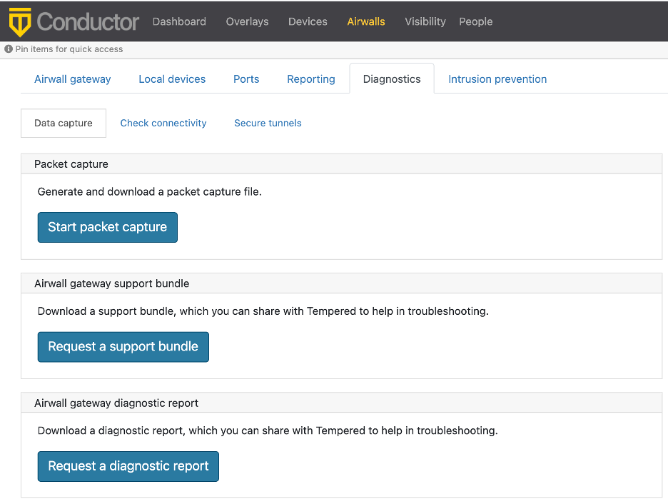
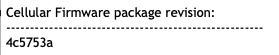
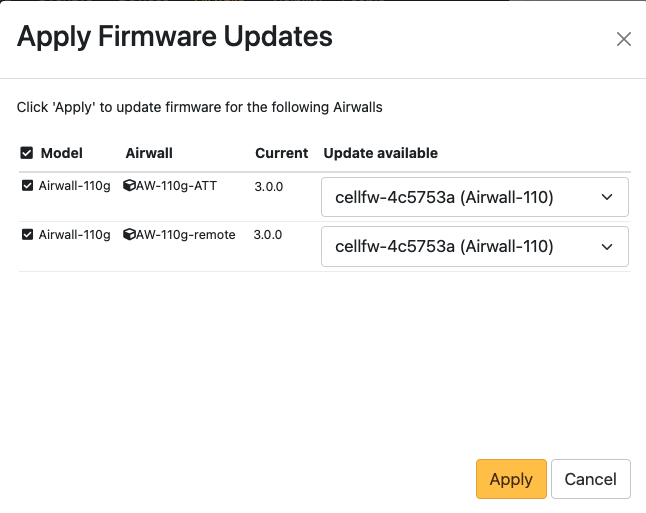

3G Sunset – Required Cellular Firmware Update for 110g
AT&T Turned off their 3G network on Feb 22, 2022, and T-Mobile is turning off their 3G network on Jul 1, 2022. This change affects the Quectel modems on the 110g Airwall Gateway, and any AV3200g/u Airwall Gateways installed before Dec 12, 2021. If you are operating one of these Airwall Gateways using an AT&T or TMobile cellular connection, you should install new cellular firmware on them before the respective shutoff date.
Warning:
To avoid disruptions in your AT&T or T-Mobile cellular service, you must
update your cellular firmware on 110g Airwall Gateways before
2/22/22 (AT&T) or 07/01/22 (T-Mobile). If you do not, you will have to have an
ethernet connection or perform on-site diagnostics for all impacted Airwall Gateways to
restore reliable cell connectivity.
Attention: If you already updated Airwall Gateways that
are using T-Mobile cellular – Install the latest (build 125) update to
correct any issues.
- Supported Versions
- v2.2.0 and later Airwall Gateways and Conductor
- Supported Cellular Services
-
- AT&T - Required
- T-Mobile on 110g - Required.
- T-Mobile on Advantech ICR-32xx – Not certified by Advantech.
- All others - Optional
Check if you need the update
- In the Conductor, go to Airwalls, and open the page for the Airwall Gateway 110g or Advantech ICR-32xx that you want to check.
- Open Diagnostics.
-
Select Request a diagnostic report.

- Wait for it to build the report, and then download it.
-
Open the report and search for Cellular Firmware package
revision. Check that it shows 4c5753a:

Update your Cellular Firmware
- Check that your Conductor has the cellular firmware update, or download the "Hotfix for 3G Sunset Airwall Gateway 110" (filename is Airwall-110_cellfw-4c5753a-125_package) or Advantech 32xx (filename is Airwall-112_cellfw-4c5753a-125_package) from Hotfixes or Cellular modem firmware.
-
If you downloaded the file, in the Conductor, upload the cellular firmware packages:
- Go to .
- Under Firmware updates, select Upload firmware.
- Select Choose file, and select the firmware package you downloaded.
- Select Upload.
- Go to Airwalls, and select all of your 110g (or Advantech, if needed) Airwall Gateways.
-
Select . These images show updating 110g Airwall Gateways.

- Under Update available, select cellfw-1dfe737 for each Airwall Gateway.
- Select Apply. The new firmware will be installed as each Airwall Gateway connects to the Conductor.
Note: You can also find the firmware update under and select Install.
Tip: After you’ve updated these Airwall Gateways, use and tag them (with something like “Ready for 3G Sunset”) to
indicate they’ve been updated.